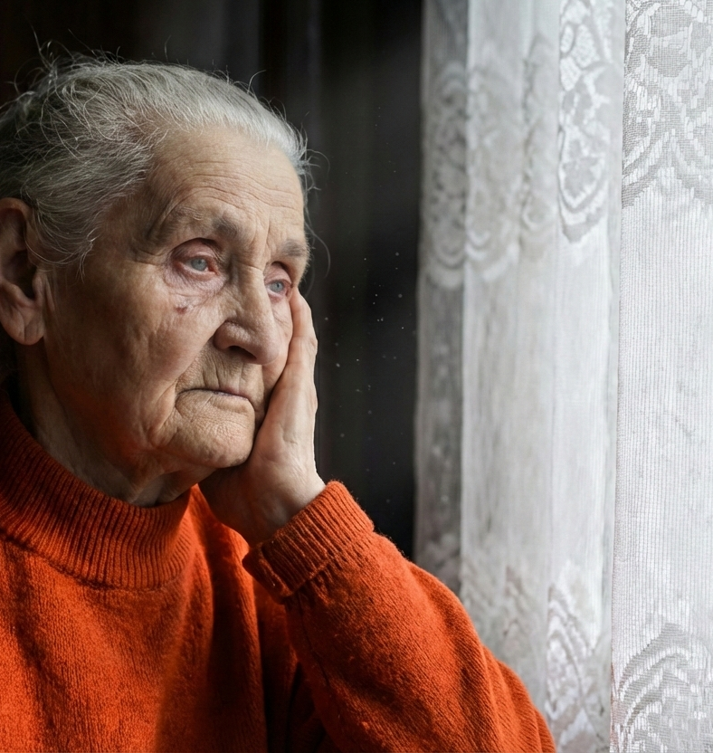
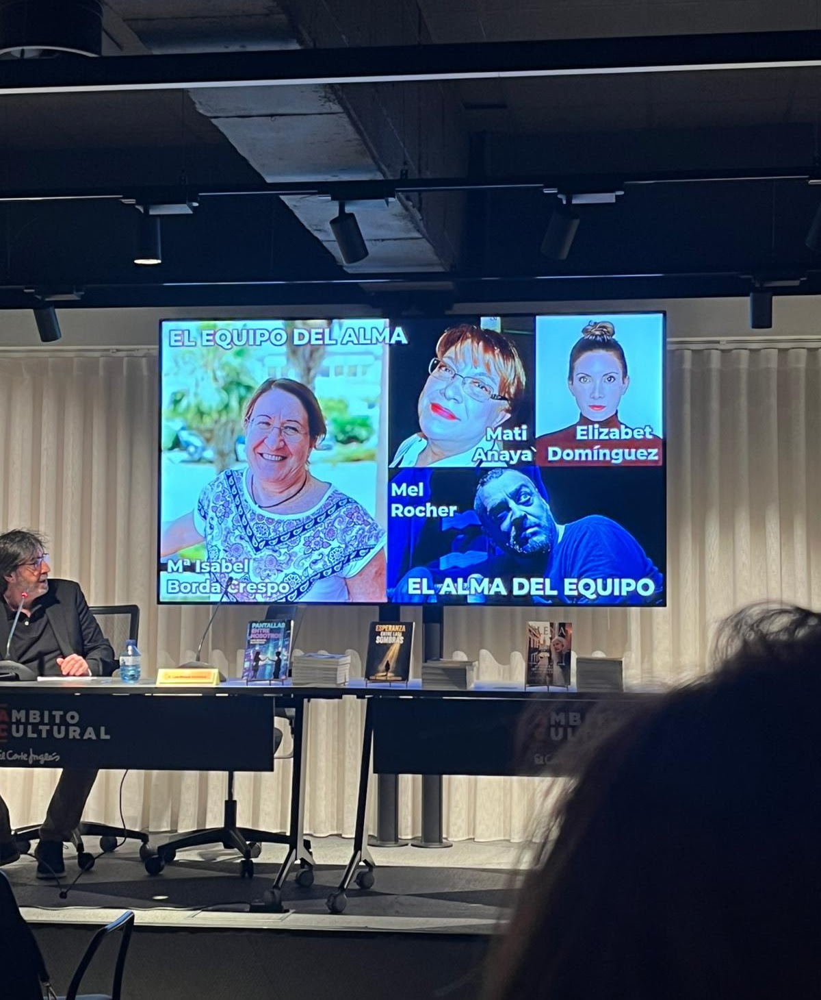

El pasado 27 de mayo, la Residencia Madre Carmen de Málaga acogió la primera sesión de «Redes Reales» ante un grupo de residentes. Durante una hora que, en palabras de muchos asistentes, «se hizo cortísima», el salón se transformó en un espacio de literatura, emoción y encuentro.
Mati Anaya y Mel Rocher, actriz y actor malagueños, dieron voz y cuerpo a Elena y a Juan, los protagonistas de las novelas Elena y Esperanza entre las sombras.
Pero el momento más emocionante llegó cuando tres de sus residentes, Trini, Carmen y Carmen, se animaron a leer en voz alta pasajes de las novelas. Lo hicieron con una sensibilidad tal que, según comentaron varias asistentes, «sonaban a poesía».
La mañana terminó como terminan las cosas que de verdad importan: con todos cantando y bailando juntos al ritmo de Raphael y Alaska. Más de una residente confesó que hacía mucho tiempo que no se lo pasaba tan bien.
Tender puentes, despertar emociones y demostrar que la literatura, leída en voz alta y compartida, sigue teniendo el poder de unirnos son objetivos cumplidos en un día inolvidable.
¡GRACIAS DE TODO CORAZÓN A LA RESIDENCIA MADRE CARMEN!
Por abrir vuestras puertas y confiar en que la literatura puede cambiar una mañana, y quizás algo más.
Testimonios¿Qué dice el público que lo ha vivido?
«Hacía mucho tiempo que no me lo pasaba tan bien.»

«Me ha emocionado la poesía contenida en las lecturas.»

«Ha sido una experiencia envolvente y muy emotiva. Me ha hecho ponerme en la piel de los protagonistas y aprender valores esenciales para la vida. Son lecturas escritas con el corazón, que te sacuden el alma y te dicen: "¡Para, y date cuenta de lo importante!" La maestría de Mel y Mati atrapa los sentidos y te llega a lo más profundo...»

«Las novelas nos hacen reflexionar sobre muchas realidades que, aunque a veces sean duras, es importante conocer. La reacción de todos los residentes fue muy gratificante. La forma de narrar las historias por parte de los actores fue excelente. Sin duda, volveríamos a repetir esta experiencia, porque ha sido muy enriquecedora y especial para todos nosotros.»